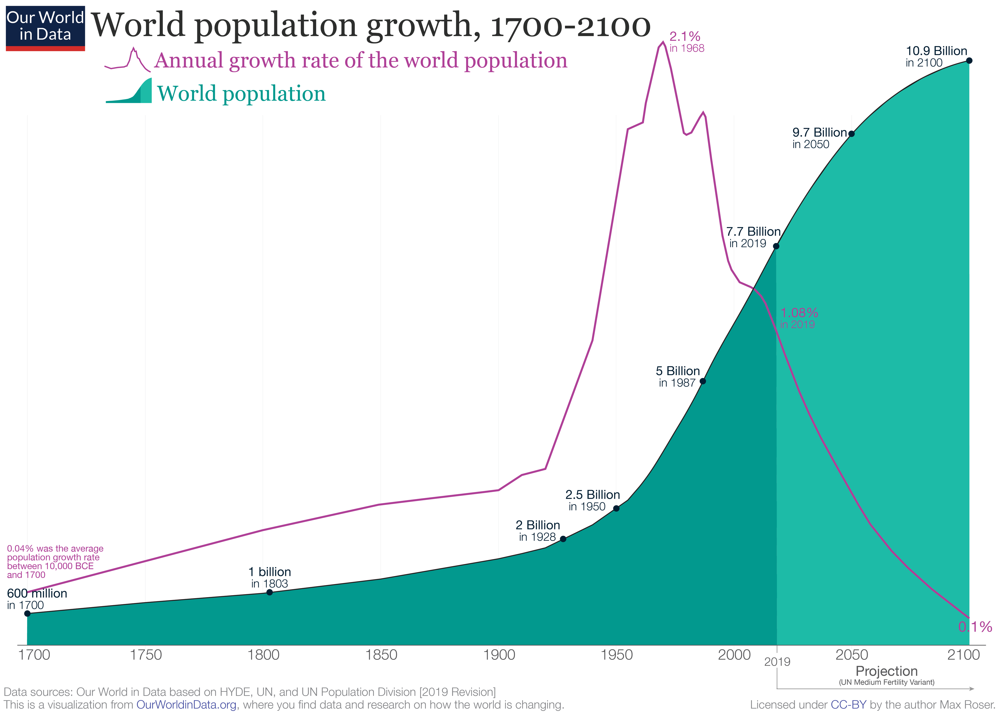
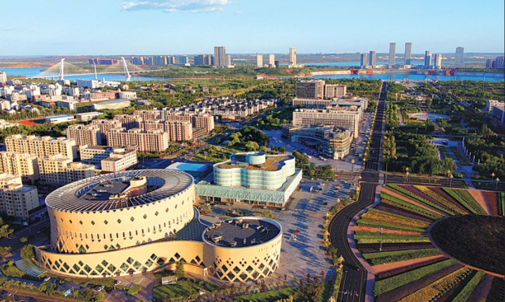
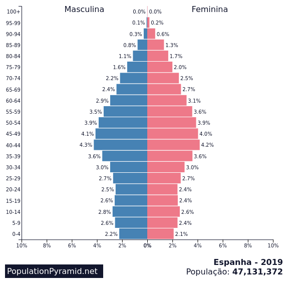

Dados populacionais
1. Introdução
Segundo a Teoria malthusiana, criada por Thomas Malthus, a população cresceria em progressão geométrica, enquanto a produção de alimentos cresceria em progressão aritmética, ou seja, haveria crises onde o alimento seria excesso. A teoria foi proposta como inadequada, pois Malthus não considerou que a produtividade na produção de alimentos também aumentaria. Mas Malthus propôs que seriam necessárias ações para o controle da população, como aumento do custo de vida, casamento tardio, ações governamentais e etc. Tais ações seriam dispensadas já que a teoria se provou errada, mas diversos países passam ou vão passar por problemas que desencadeiam o declínio populacional, assim, afetando a sustentabilidade do planeta.
1.1 Diminuição da população
Atualmente, em 2024, a população possui 8 bilhões de pessoas, onde pode ser conferido em Worldometer. Segundo as nações unidas, em 2100, o mundo terá cerca de 11 bilhões de pessoas. Na primeira instância, a população continua crescendo, mas vendo exemplos como o Japão, observa-se que a população diminuiu em 800 mil pessoas desde 2009.
Encontra-se um dos motivos do Japão estar tendo baixa natalidade quando pergunta-se aos jovens sobre ter filhos, recebendo “muito caro” como resposta. A alta expectativa de vida também faz com o que o governo não consiga sustentar uma grande demanda de idosos aposentados.
Na Coreia do Sul, encontra-se o mesmo cenário, sendo que a Exame noticiou uma pesquisa dramática para ilustrar o declínio populacional, sendo que por mil pessoas, apenas 8,6 bebês foram registrados. Assim, a população da Coreia do Sul seria extinta em 2750. Também perguntaram para mulheres sul-coreanas de 9 a 24 anos se queriam casar-se com alguém, chegando a resultados de 46% em caso afirmativo.
A China também criou a política do filho único, durando de 1980 a 2015, sendo uma tentativa de controlar a população. Na época parecia uma boa ideia, porém hoje em dia se tornou um pesadelo para a China.
Na China pode-se observar um fenômeno interessante que causou grandes danos à sustentabilidade. Durante décadas, o comércio imobiliário era incentivado na China, mas com o envelhecimento da população e a baixa natalidade, causa a ausência de compradores para tais imóveis, assim resulta em recursos gastos e áreas desmatadas para o surgimento de “cidades fantasmas”, termo designado para cidades com pouca ou nenhuma população. Uma cidade chamada de Kangbashi foi construída em Ordos, na China. Sendo gasto 160 bilhões de dólares para a sua construção e tendo espaço para abrigar 1 milhão de pessoas, entretanto, cerca de 153 mil pessoas habitam o local.
O problema da baixa natalidade está sendo um dos principais problemas na Ásia, mas há países europeus, como a Espanha, que passam pelo mesmo problema. O desenvolvimento de métodos anticoncepcionais e a inserção da mulher no mercado de trabalho fazem com que a taxa de natalidade caia e ocorra a inversão da pirâmide etária. Na Espanha, observa-se que a idade média é de 46,3 anos.
1.2 População no Brasil
Segundo o IBGE, o Brasil está tendo sua taxa de crescimento anual reduzida a cada década, tendo seu pico em 1970, com aproximadamente 3% e o último registro, em 2022, foi de 0,52%. Em outra perspectiva, em 1970, a taxa de fecundidade de uma mulher é 5,8 filhos, já hoje em dia é aproximadamente dois. Aumento do custo de vida é um dos fatores que desencadeiam o declínio populacional. Logo, o Brasil que enfrenta dificuldades econômicas passará por realidades ainda mais alarmantes. Uma projeção feita para 2100, diz que o Brasil terá uma população de 163 milhões de pessoas, o que atualmente está em 215.3 milhões.
1.3 Declínio e sustentabilidade
Pode-se observar que diversos países estão a caminho a um declínio populacional, é lógico a se pensar que quanto menos pessoas, menos recursos serão consumidos, assim melhora a sustentabilidade dos países, mas os fatos não são exatamente o que se pensa. Um país com uma pirâmide etária invertida, será afetado por crises econômicas, podendo trazer fome, falta de segurança e deficiência na educação. Segundo a pirâmide de Maslow, as pessoas precisam ter suas necessidades de sobrevivência cumpridas para que consiga progredir na pirâmide, assim, um país que passa por fome, primeiro, pensara em como resolvê-la da forma mais rápida possível, deixando questões de sustentabilidade de lado. O exemplo aplicado foi a fome, porém qualquer outra situação desesperadora, fará um país se desviar de seus princípios para resolução de tais conflitos. A Alemanha passou por uma crise energética em 2021 devido ao corte do gás russo, assim, a Alemanha precisou reacender a indústria do carvão para gerar energia, uma prática extremamente prejudicial ao meio ambiente, gerando problemas para o solo, a qualidade do ar e em casos mais graves, chuvas ácidas.
1.4 Lados positivos
Uma população mais idosa costuma ter hábitos de consumo diferentes dos jovens, o que pode causar uma diminuição na pegada ecológica e utilização de recursos naturais. Idosos aposentados tendem a buscar por uma boa qualidade de vida buscando hábitos mais sustentáveis como dietas saudáveis e rotinas de exercícios. Por outro lado, há um mercado que precisa se adaptar aos novos hábitos de seus clientes. Pela baixa capacidade de mobilidade, idosos tendem a usar transportes públicos, afetando empresas que produzem veículos para uso pessoal. A demanda por imóveis aumentará, mas haverá poucas pessoas interessadas em comprá-los.
Outro fator interessante é a demanda de alimentos. Com o baixo número de pessoas, pode existir a possibilidade de cair o desperdício de alimentos, tendo em conta que consumirá menos recursos e facilitará o transporte e a gestão de tais produtos.
1.5 Conclusão
Ao pensar em áreas relacionadas à tecnologia, volta à tona o pensamento citado nos parágrafos anteriores, pode ocorrer atrasos no desenvolvimento tecnológico. A sustentabilidade é um fator em que uma empresa precisa levar em conta para o seu próximo produto, mas para tais ações é necessário esforços e recursos no desenvolvimento de pesquisas. Em 1946 o primeiro computador foi inventado, assim é comum pensar que a sustentabilidade não foi levada em conta por não ter conhecimento necessário para tal. Outro fator que se assemelha é a utilização de CPUs para o processamento de inteligências artificiais, assim, ambos os fatores se repetem e apenas o investimento em pesquisas para fazer essas práticas menos poluentes. Com o declínio populacional, diversas áreas da economia estariam instáveis, o que levaria as empresas a evitar atitudes desnecessárias para sua sobrevivência, havendo cortes de salários, funcionários e investidores em áreas relacionadas a inovações para reduzir a emissão de gases prejudiciais ao meio ambiente. Adicionado um agente interessante para completar o raciocínio seria a diminuição de consumo das tecnologias, já que teria uma demanda menor para tais serviços ou produtos envolvido a tecnologia.
1.6 Conclusão
Ao analisar o declínio populacional, pode cair o consumo de recursos naturais e preservar os ecossistemas, mas o declínio populacional causa crises econômicas, o que pode refletir no baixo acesso ao alimento para a população, diminuição na inovação de novas tecnologias e crises em diversas áreas. Tanto o declínio populacional como o aumento exagerado da população causam consequências para a sustentabilidade no planeta. A conclusão é alcançar o equilíbrio entre o crescimento da população e a sustentabilidade.